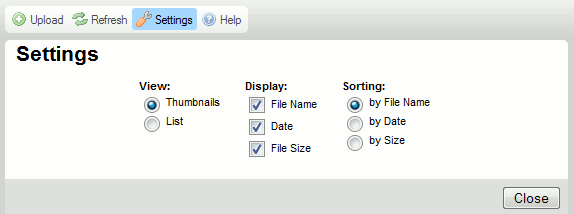

Przycisk Ustawienia (Settings) dostępny w pasku narzędzi CKFindera otwiera panel ustawień, w którym można skonfigurować CKFindera i dostosować ustawienia programu do własnych potrzeb.
Poniższy rysunek prezentuje panel ustawień CKFindera, który otwiera się po kliknięciu przycisku paska narzędzi.

Wszystkie ustawienia zapisywane są automatycznie za pomocą "cookies" przeglądarki internetowej. "Cookies" ("ciasteczka") to niewielkie pliki przechowujące na Twoim komputerze prywatne ustawienia konfiguracyjne dla określonych witryn internetowych.
W celu zamknięcia (ukrycia) panelu ustawień należy nacisnąć przycisk Zamknij (Close) lub kliknąć ponownie przycisk Ustawienia na pasku narzędzi.
Wszystkie opcje konfiguracyjne odnoszą się do panelu plików i kontrolują sposób wyświetlania plików w CKFinderze. Panel plików reaguje na wszelkie zmiany wprowadzone w panelu ustawień natychmiast.
Ustawia tryb widoku panelu plików:
Decyduje o ilości informacji wyświetlanych w panelu plików. Następujące opcje mogą być włączone lub wyłączone:
Jeśli korzystasz z trybu wyświetlania Miniaturki, możesz odznaczyć wszystkie opcje. W widoku Listy nazwa pliku zawsze będzie wyświetlana.
Poniższy rysunek prezentuje różne opcje wyświetlania w trybie Miniaturki.
|
|
|
|
|
Ustawia porządek wyświetlania plików. Dostępne są następujące opcje: